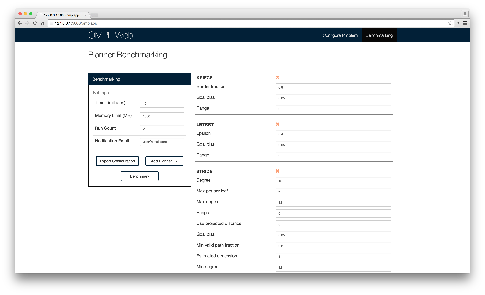

2015-07-07
With problem configuration and visualization implemented, the next big feature is benchmarking.
Benchmarking is an important feature of OMPL Web that does not exist in its desktop counterpart. Since each planner has a unique way of finding solutions, different planners may be better suited for different types of problems. For this reason, it is important to know when to use a specific planner. By benchmarking multiple planners on a given problem, we can compare each planner's performance across various metrics such as time, memory, solution length, etc.
Furthermore, since the planners are all sampling-based, the problem can be solved repeatedly to get consistent data.

The benchmarking functionality of OMPL Web allows a user to solve any
given problem n times with multiple planners and various
planner configurations. On the Benchmarking page, the user
can add and configure the planners to be benchmarked. Then, they can
submit a job to the server and be notified via email when the job
completes.
When the user submits a job, a .cfg file is created on
the client-side containing all of the problem configuration details and
benchmarking settings. This information is sent to the server for
processing. The server processes this data using the benchmarking
scripts included in OMPL and creates a SQLite database of results.
Currently, this (very small) database is emailed to the user. This
database file can be uploaded to Planner Arena for an interactive
visualization of the results.
In the future, the benchmarking results will be made available to the user directly on Planner Arena without the need for the user to obtain the database file.